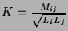

Kxxxxxxx Lyyyyyyy Lzzzzzzz value
.MUTual_inductor label Lyyyyyyy Lzzzzzzz value
Coupled mutual inductance.
K couples two inductors. The value is the coefficient of coupling. Using the dot convention, place a dot on the first node of each inductor.
The coefficient of coupling is given by .
This release does not support multiple coupled inductors.